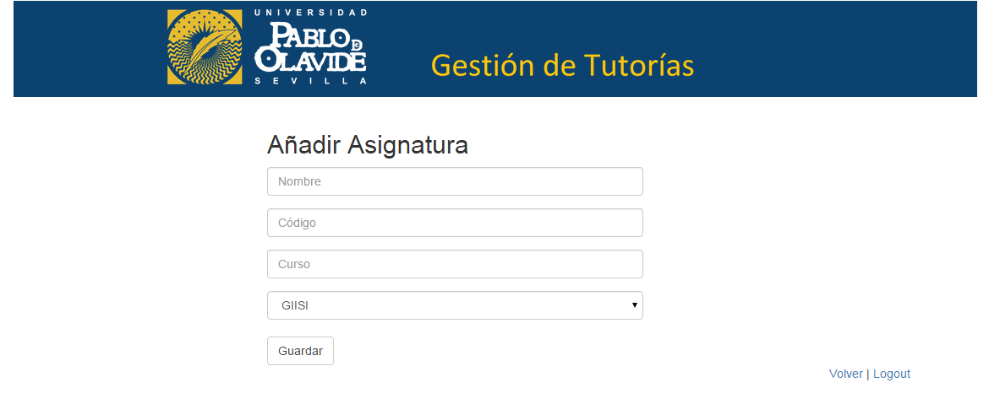
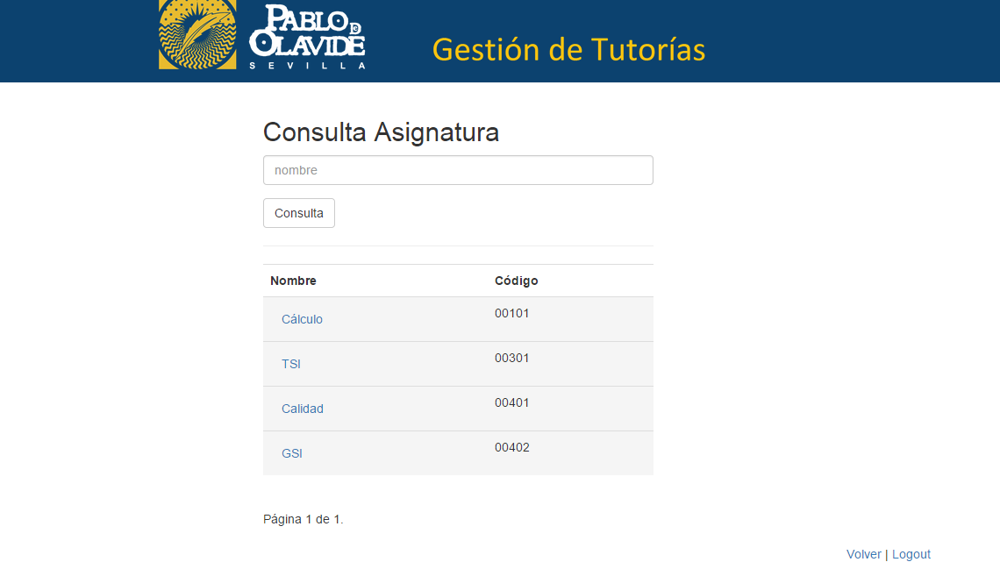
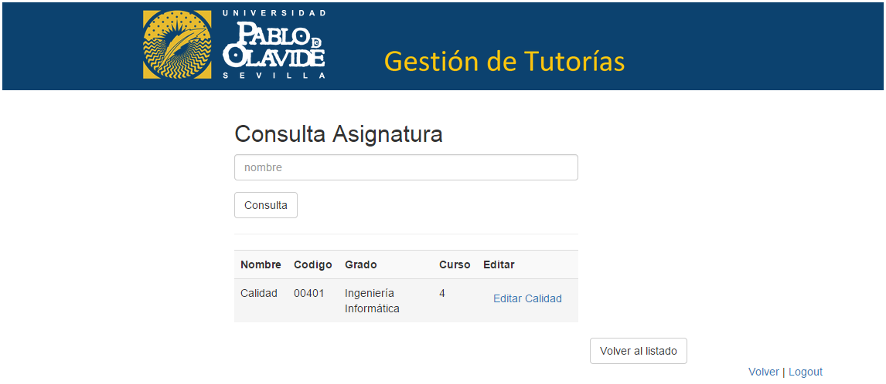
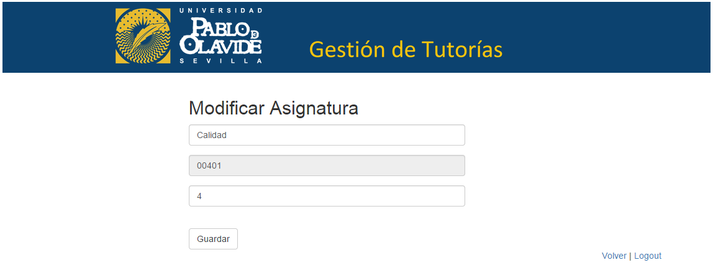
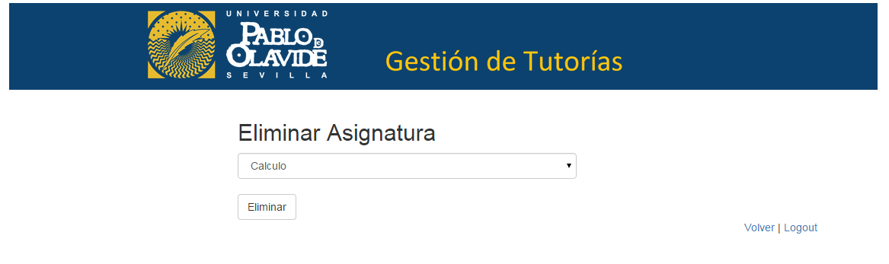

Asignaturas¶
Siendo administrador, el usuario puede añadir, consultar, modificar y eliminar una asignatura del sistema.
- Añadir asignatura
- Consultar asignatura
- Modificar asignatura
- Eliminar asignatura
Añadir asignatura¶
Para añadir una nueva asignatura, el admin, desde el panel de administrador que se muestra, selecciona el botón Añadir asignatura.

A continuación, el admin rellena un formulario con atributos propios de una asignatura para añadir una nueva, tales como nombre, código, curso y el título del grado al que pertenece y pulsa el botón Guardar.
Consultar asignatura¶
Para consultar los datos de un asignatura, el admin, desde el panel administrador que se muestra, selecciona el botón Ver asignaturas.
A continuación, le aparece la siguiente página donde puede ver una lista de todos los asignaturas con su nombre y su código registrados en el sistema (lista paginada cada 10 asignaturas). Además de un buscador, donde puede buscar el asignatura por su título.
Una vez que se le muestra el asignatura que quiere consultar, debe pinchar sobre el nombre de ese asignatura y se dirigirá a una página donde se muestra toda la información relativa a ese asignatura.
Modificar asignatura¶
Para modificar un asignatura, desde el panel del administrador, debe repetir los pasos para consultar una asignatura y una vez esté en la vista de datos de asignatura pulsar sobre el botón Editar <nombre de asignatura>.
Se muestra un formulario con los campos correspondientes a la asignatura ya rellenos con la disponibilidad de cambiar los que se crean oportunos. Para modificar la asignatura se pulsa en Guardar.
Eliminar asignatura¶
Para eliminar una asignatura, el admin, desde el panel administrador que se muestra, selecciona el botón Eliminar asignatura.
El sistema muestra un desplegable con todas las asignaturas registradas del sistema para que el admin seleccione aquella que quiere eliminar y pulse sobre el botón eliminar.
